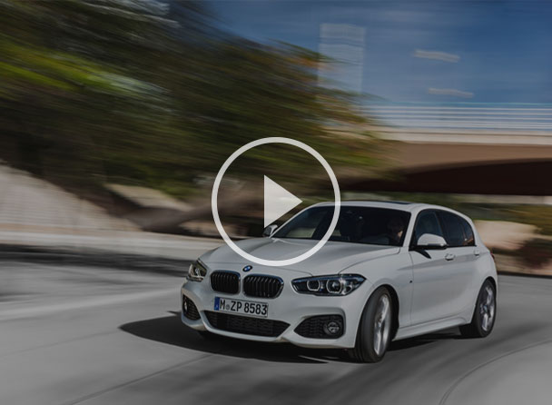
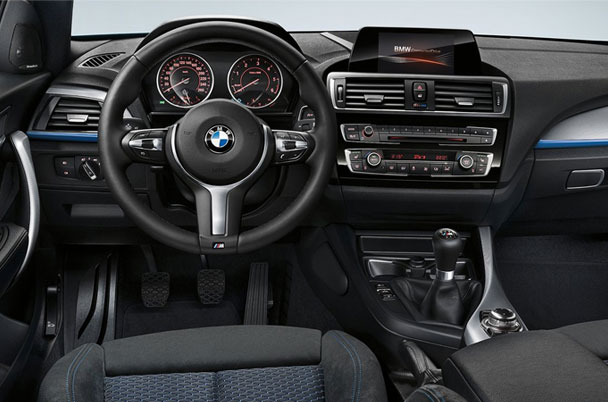
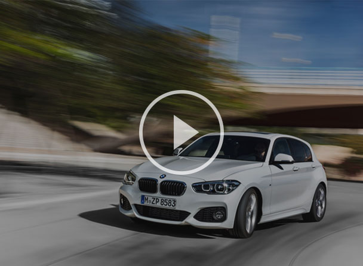
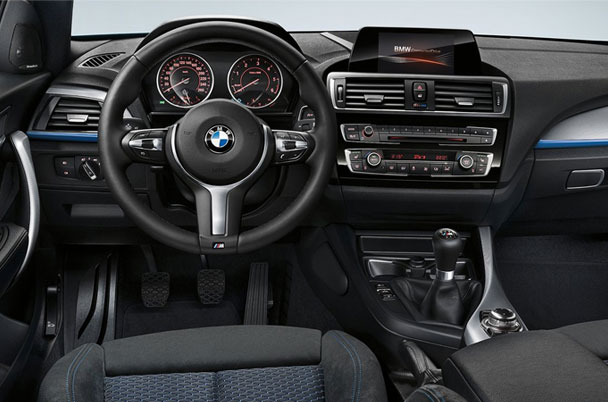

老款F20 1系的前脸4年来一直是宝马车迷们的心病，而直到近日新1系官图的出现，1系的前脸才恢复了宝马应有的审美。

外观方面
车灯的变化是外观改变中最明显的，从老款大三角车灯换成更加纤细的车灯，同时进气格栅变得更宽，这使得前脸看上去更加专注、运动、并拥有一些现代化的感觉。

内饰方面
6.5英寸显示屏将会是标配，搭载的iDrive系统将会配有ConnectedDrive互联驾驶功能，它会让你获得更强的驾驶乐趣。首先是安全层面，选装的驾驶辅助套件能非常神奇的辅助你驾驶。
订制化阅读

老款F20 1系的前脸4年来一直是宝马车迷们的心病，而直到近日新1系官图的出现，1系的前脸才恢复了宝马应有的审美。
车灯的变化是外观改变中最明显的，从老款大三角车灯换成更加纤细的车灯，同时进气格栅变得更宽，这使得前脸看上去更加专注、运动、并拥有一些现代化的感觉。

6.5英寸显示屏将会是标配，搭载的iDrive系统将会配有ConnectedDrive互联驾驶功能，它会让你获得更强的驾驶乐趣。首先是安全层面，选装的驾驶辅助套件能非常神奇的辅助你驾驶。
点击显示更多消息